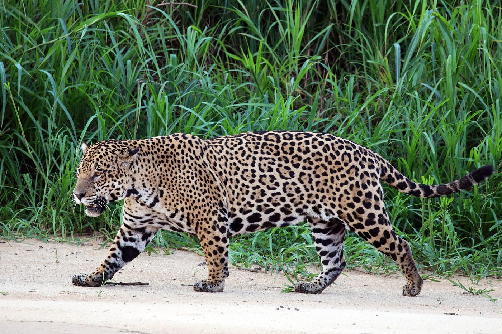
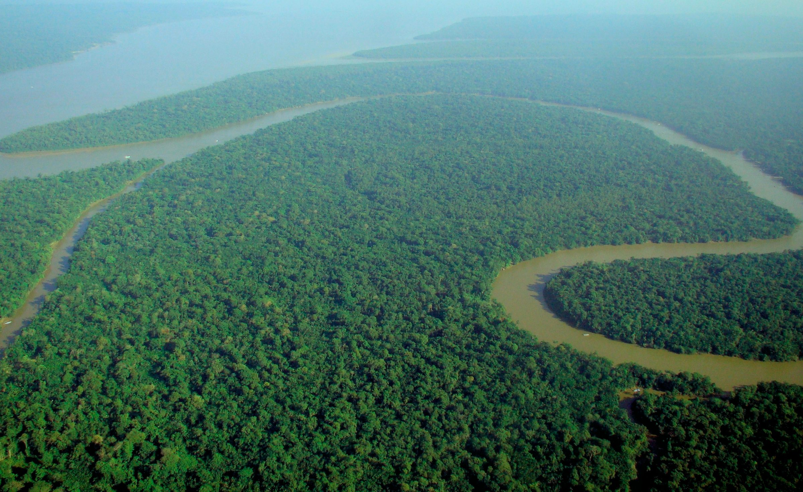
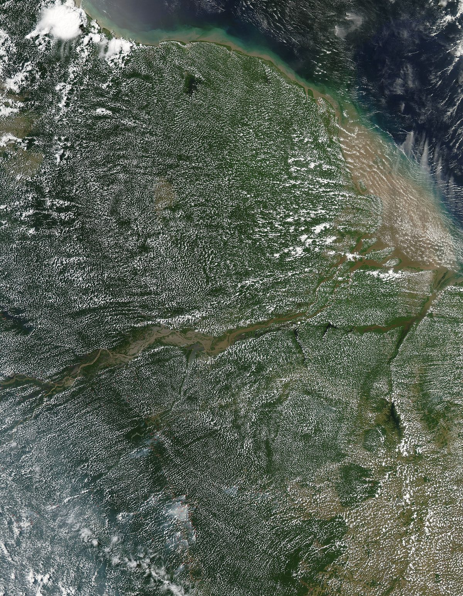
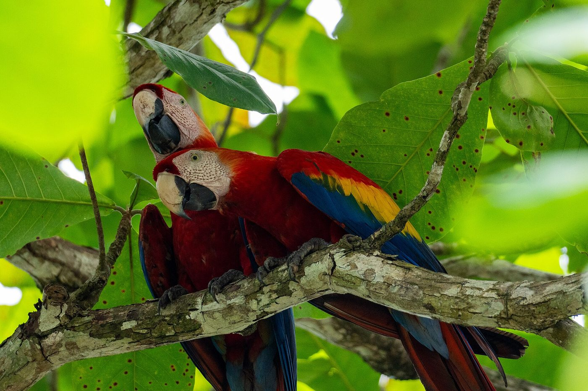
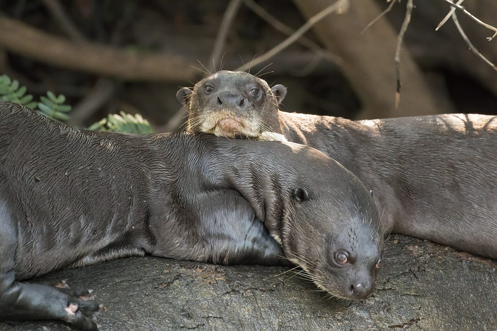
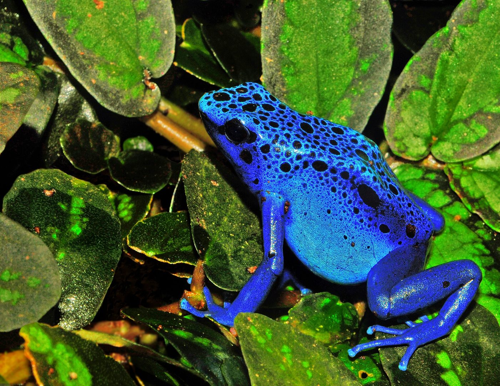
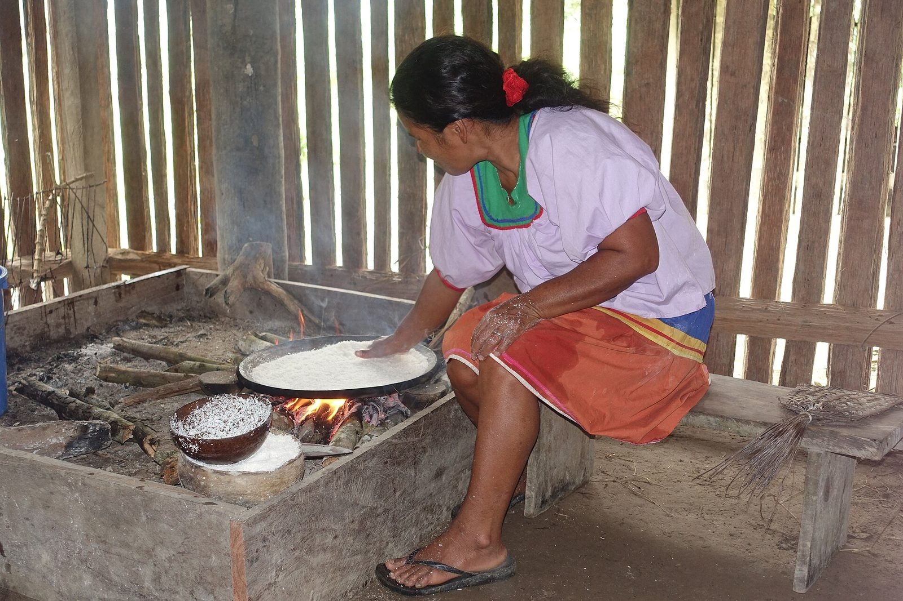
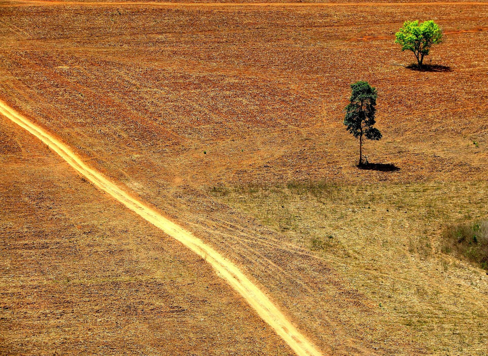
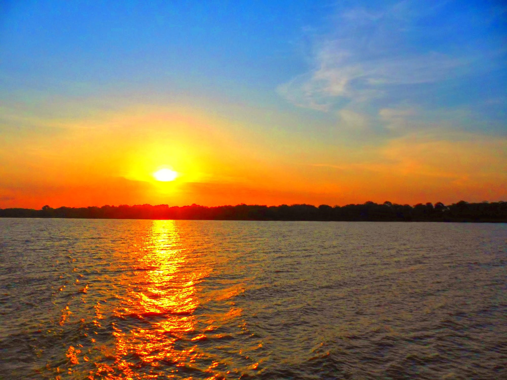

01
© Charles J. Sharp · CC BY-SA 4.0
Panthera onca
Jaguar
El mayor felino de América y depredador tope. Su territorio puede superar los 100 km²: donde todavía hay jaguar, el bosque funciona entero.

La selva más grande del mundo respira por todos nosotros. Un bosque que fabrica su propia lluvia, guarda un décimo de las especies conocidas y sostiene a más de 400 pueblos originarios.

Un solo árbol grande puede bombear cerca de 1.000 litros de agua por día a la atmósfera. Multiplicado por cientos de miles de millones, el resultado son los ríos voladores: corrientes de vapor que cruzan el continente y descargan lluvia sobre los Andes, el Chaco y la Pampa.
La Amazonia no es sólo un pulmón: es una bomba de humedad de escala continental. Esas manchas blancas sobre el verde son la selva evaporando su propia tormenta.
«El bosque no crece porque llueve.
Llueve porque hay bosque.» Antonio Donato Nobre — Científico del clima
Una sola hectárea de selva puede albergar más especies de árboles que toda Europa occidental junta. Estos son apenas cuatro rostros de un censo que nadie terminó de escribir.

El mayor felino de América y depredador tope. Su territorio puede superar los 100 km²: donde todavía hay jaguar, el bosque funciona entero.

Forman parejas de por vida y vuelan kilómetros cada día buscando fruta. Al hacerlo dispersan semillas y siembran la selva del futuro.

Llega a los dos metros y caza en grupos familiares ruidosos. Casi exterminada por el comercio de pieles, hoy sobrevive en ríos limpios contados.

Su color grita advertencia. De la piel de estas ranas salieron moléculas que la medicina estudia como analgésicos cientos de veces más potentes que la morfina.

Más de 400 pueblos originarios viven en la Amazonia y hablan cerca de 300 lenguas. Algunos permanecen en aislamiento voluntario, sin contacto con el exterior.
Los datos satelitales son contundentes: en los territorios indígenas titulados la deforestación es varias veces menor que fuera de ellos. No es folclore: es manejo del territorio acumulado durante milenios.
Grandes zonas de selva que creemos «vírgenes» son en realidad huertas antiguas. Las tierras negras del Amazonas —suelos fértiles creados por manos humanas hace más de mil años— siguen produciendo hoy.
Ya se perdió cerca del 17 % de la selva original. Varios modelos ubican el punto de inflexión entre el 20 % y el 25 %: pasado ese umbral, el sistema de lluvias se quiebra y grandes zonas colapsan hacia una sabana seca.
Ganadería, soja, minería ilegal de oro, rutas y fuego. Partes del sur y el este del bosque ya emiten más carbono del que absorben: dejaron de ser solución para volverse problema.
Dos árboles en pie en medio de un potrero no son un bosque. Son lo que quedó.

La medida de conservación más barata y más eficaz que existe. Donde hay título comunitario, el bosque se queda de pie.
Carne, soja, madera y oro con trazabilidad real hasta el origen. Sin demanda no hay motosierra rentable.
Alertas satelitales públicas que permiten detectar una tala en días y no en años. Ver es el primer acto de defensa.
Açaí, castaña, cacao silvestre, fibras y turismo comunitario: valen más con el bosque vivo que talado.
Restaurar áreas degradadas reconecta fragmentos aislados y devuelve corredores por donde la fauna vuelve a moverse.

No hay reemplazo, ni tecnología equivalente, ni segunda copia. Lo que se pierde acá no vuelve en escalas de tiempo humanas.